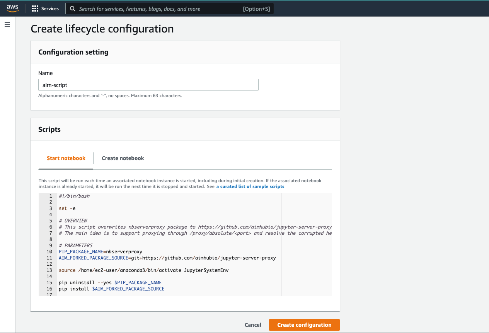
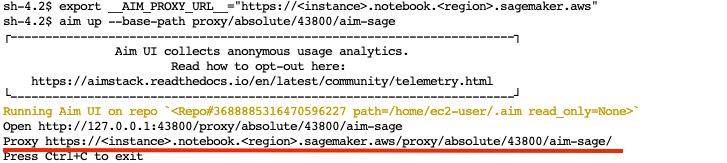
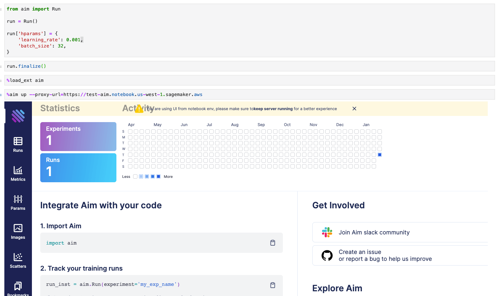
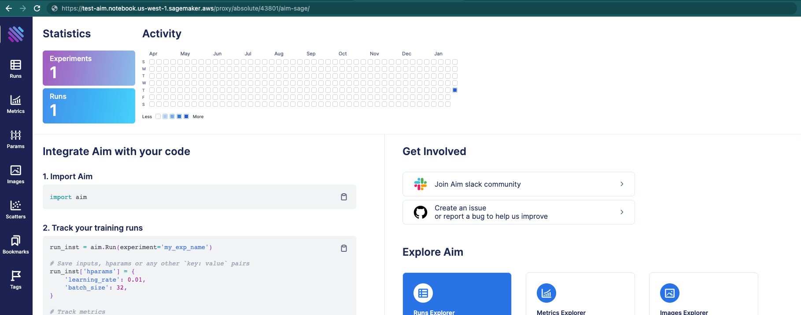

Run Aim UI on SageMaker Notebook instance
In this guide you will learn how to run Aim UI on your Sagemaker Jupyter instance
Aim can be installed and used on Jupyter notebooks. With SageMaker notebook instance, there are difficulties with establishing POST requests which prevents some Aim functionalities to work. So we have built a script to update the proxying package on SageMaker notebook instance. In order to work with Aim UI, please follow the steps below:
Create a lifecycle configuration on your SageMaker Service.
Copy and paste the script in your configuration’s
Start Notebookphase.
 For more information how to create a lifecycle configuration on AWS SageMaker Service, please go through the AWS SageMaker Documentation.
After creating a lifecycle configuration, attach it to your SageMaker instance and restart the instance.
It is possible to run this script manually from the terminal of your jupyter instance as well.
Note
Why this script is used for?
The script above will uptade the jupyter-server-proxy package on your notebook instance. To access a port on your instance (i.e. open the Aim UI) API requests and static files need to go through the proxy, which is created by the package (see the script). It will replace the existing proxy and make sure Aim and other such requests go through. Fore more information please go through the https://github.com/jupyterhub/jupyter-server-proxy/pull/328#issue-1145874348.
Once your notebook instance is successfully restarted you will be able to use Aim UI on the instance.
Next, install aim.
$ pip install aim
Initialize a new run and save some hyperparameters.
from aim import Run
run = Run()
run['hparams'] = {
'learning_rate': 0.001,
'batch_size': 32,
}
Using Terminal
In order to run Aim UI from a terminal, execute the following command:
$ aim up --base-path=/proxy/absolute/<your-port>/aim-sage
After running this command you will be able to open <sagemker_instance>/proxy/absolute/<your-port>/aim-sage/ in your browser.
The default port is 43800.
It is possible to set __AIM_PROXY_URL__ env variable, and aim up command will print out the generated url for Aim UI.
To find your proxy url, just copy your SageMaker URL and remove /lab postfix.

Using Notebook Extension
Load Aim extension for notebooks:
%load_ext aim
Run
%aim upcommand to open Aim UI in the notebook:
%aim up --proxy-url=https://<instance>.notebook.<region>.sagemaker.aws
Will load the Aim UI in the notebook cell.

Will print out the proxy url under the loaded Aim UI. Use that URL to open Aim UI on your browser.

The default port is 43801 for notebook extension to prevent confusions.
The --port=<your-port> argument is supported as well.
Note
In notebook extension, the only mandatory argument is --proxy-url when using it on SageMaker.